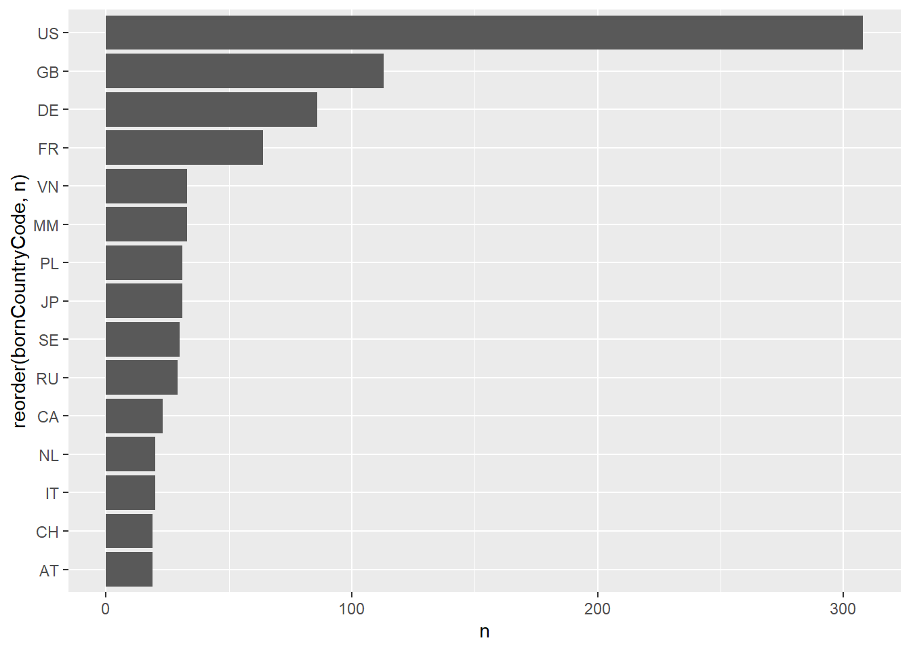
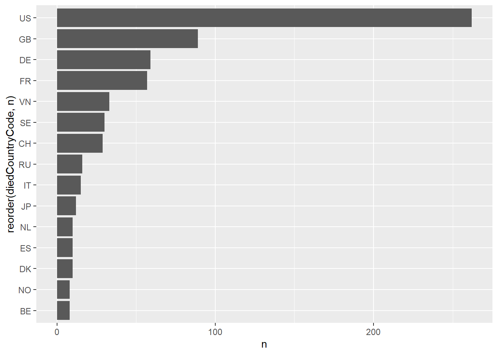
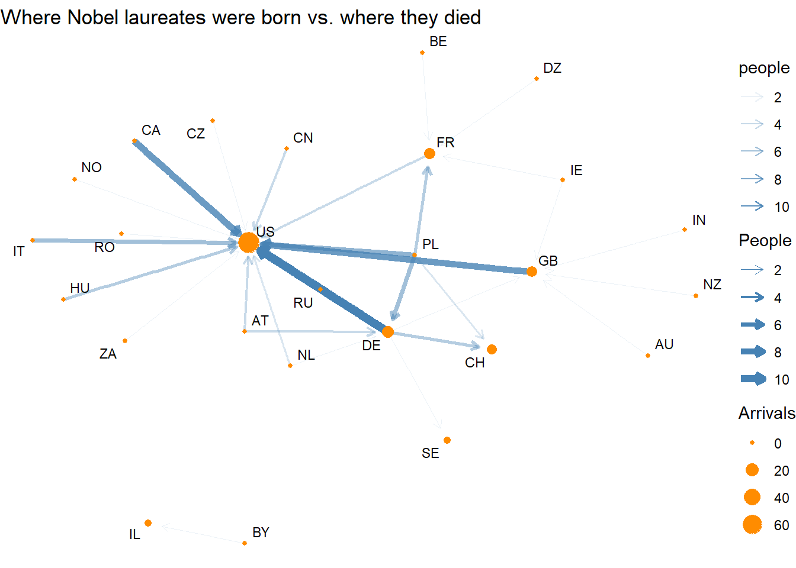
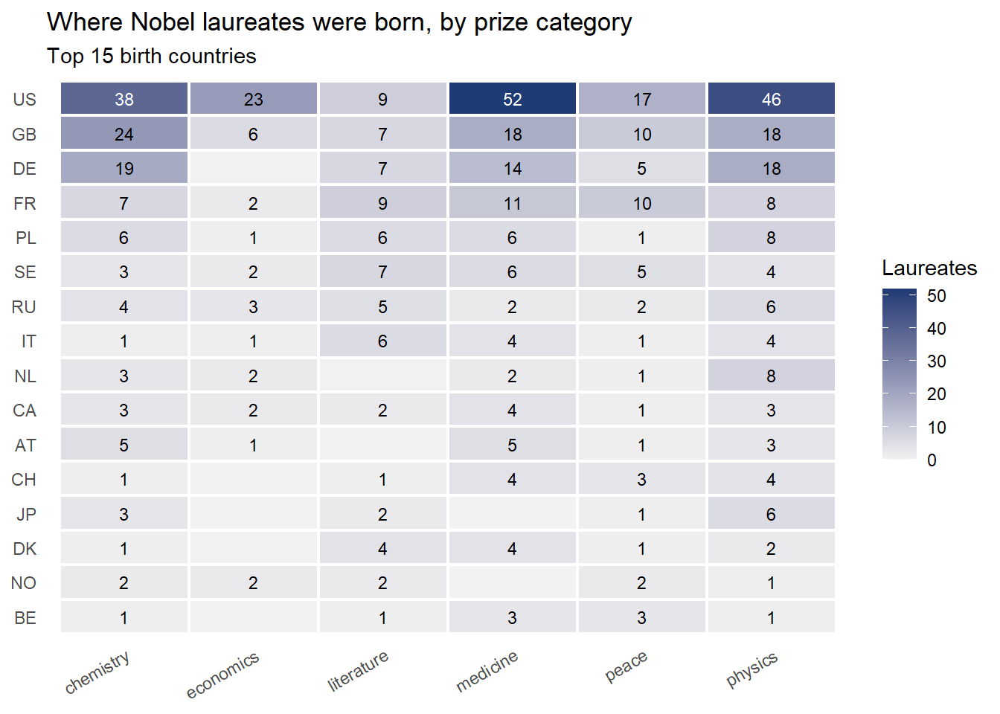
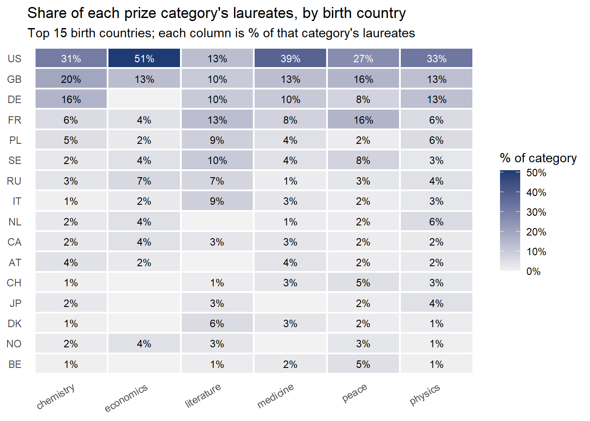
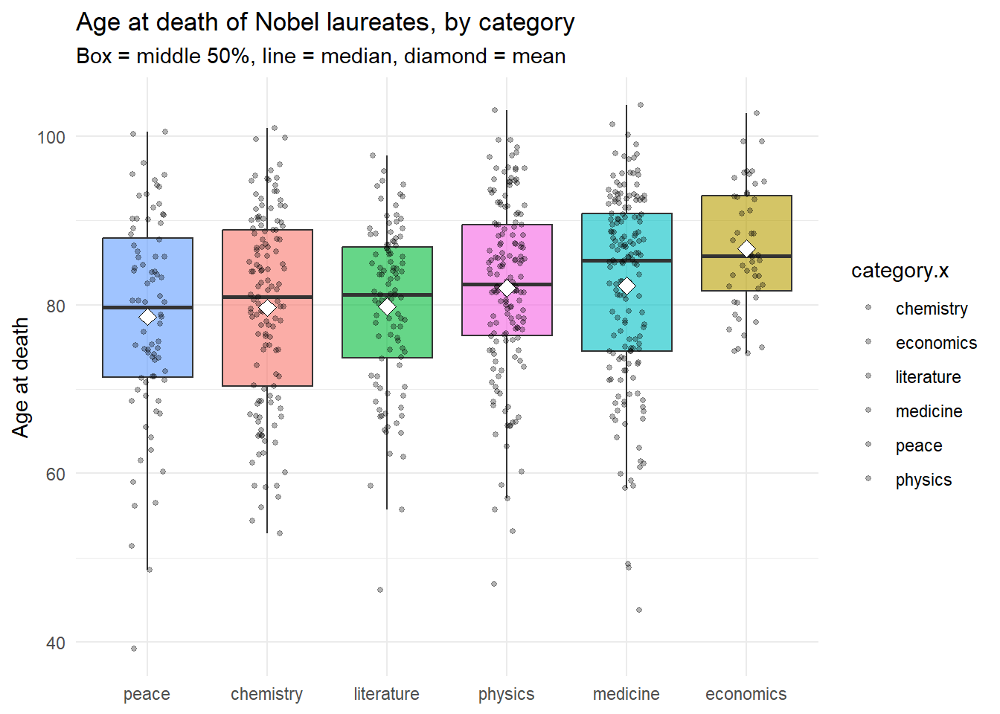
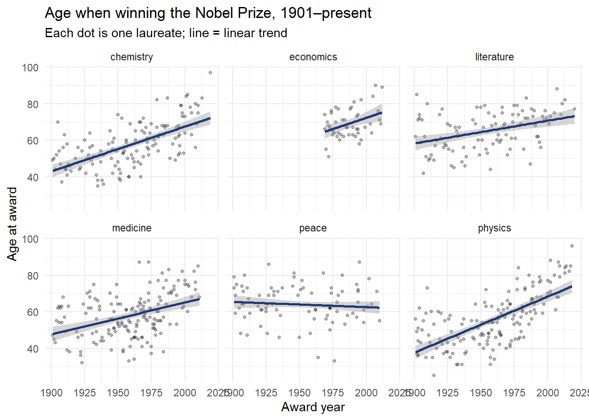

library(tidyverse)
library(jsonlite)
library(lubridate)10B CodeBase
Introduction
For this assignment, the goal was to work further with API’s in order to analyze Nobel Prize data. I will investigate 4 different questions on the data. I will also use this assignment as a platform to experiment more with Claude, as most of the time I have been driving these assignments. For this one, I will be using Claude to work through my data questions and provide visuals that I workshop through the LLM. Most of my questions revolve around the location of laureates and their ages, as this is the information I find the most interest in.
Running Code
When you click the Render button a document will be generated that includes both content and the output of embedded code. You can embed code like this:
First I will pull in the API’s for the Nobel Prize. I found these csv links on their website that bypasses the need for JSON reformatting, however if I had to pull in a JSON formatted file I would likely use jsonlite in conjunction with some of the unnesting tools discussed in this weeks curriculum.
prizes <- read_csv("http://api.nobelprize.org/v1/prize.csv")
laureate <- read_csv("http://api.nobelprize.org/v1/laureate.csv?gender=All")
country <- read_csv("http://api.nobelprize.org/v1/country.csv")I initially looked to standardize the countries by code using the country csv, but I realize now that this csv is also convoluted (multiple areas count as a single code, so it isn’t more consistent than the current setup. For my data analysis, I will plan to use the codes mostly as they are the most consistent.
laureate <- laureate |>
mutate(fullname = str_c(firstname,surname, sep = " "))
prizes <- prizes |>
mutate(fullname = str_c(firstname,surname, sep = " "))
Master <- laureate |>
inner_join(prizes, by= "fullname") |>
select(id.x, firstname.x, surname.x, fullname, gender, year.x, category.x, motivation.x, share.x, born, died, bornCountry, bornCountryCode, bornCity, diedCountry, diedCountryCode, diedCity, name, city, country) |>
mutate(
ageatdeath= time_length(interval(born,died), "years"),
ageAtAward = as.numeric(substr(as.character(year.x), 1, 4)) -
as.numeric(substr(as.character(born), 1, 4))
)One of the first things I want to do is look at locations. Not only do I want to do analysis on general locational counts, but also node-to-node counts to see if there are any trends with how these people moved around throughout their careers, and if there were any trends here.
I will start with some simple visuals for counts of birth and death locations.
Masterc1 <- Master |>
drop_na(bornCountryCode) |>
count(bornCountryCode) |>
arrange(desc(n)) |>
slice_max(n, n=15)
Masterc2 <- Master |>
drop_na(diedCountryCode) |>
count(diedCountryCode) |>
arrange(desc(n)) |>
slice_max(n, n=15)
ggplot(data= Masterc1, aes(x =n, y=reorder(bornCountryCode, n))) + geom_col() 
ggplot(data= Masterc2, aes(x =n, y=reorder(diedCountryCode, n))) + geom_col() 
Master2 <- Master |>
drop_na(bornCountryCode) |>
drop_na(diedCountryCode) |>
mutate(move = str_c(bornCountryCode, diedCountryCode, sep = "-"))As we can see there are some trends here, I would be led to believe that most people stay put where they are born, but I would like to graphically analyze further to see if there are visual trends that say otherwise.
moves <- Master2 |>
separate_wider_delim(move, delim = "-", names = c("from", "to")) |>
filter(!is.na(from), !is.na(to), from != "", to != "",
from != to) |> # keep only people who actually moved
count(from, to, name = "people") |> # how many made each move
arrange(desc(people))
head(moves)# A tibble: 6 × 3
from to people
<chr> <chr> <int>
1 DE US 11
2 CA US 9
3 GB US 9
4 PL US 7
5 IT US 6
6 PL DE 6library(igraph)
library(ggraph)
g <- graph_from_data_frame(moves |> filter(people >= 2), directed = TRUE)
# node size = how many laureates arrived in that country
V(g)$arrivals <- strength(g, mode = "in", weights = E(g)$people)
set.seed(42) # makes the layout the same every time you run it
ggraph(g, layout = "fr") +
geom_edge_fan(aes(width = people, alpha = people),
arrow = arrow(length = unit(2, "mm")),
end_cap = circle(3, "mm"),
color = "steelblue") +
geom_node_point(aes(size = arrivals), color = "darkorange") +
geom_node_text(aes(label = name), repel = TRUE, size = 3) +
scale_edge_width(range = c(0.3, 2.5)) +
theme_void() +
labs(title = "Where Nobel laureates were born vs. where they died",
size = "Arrivals", edge_width = "People")
As we can see here, US seems to be a central hub for intelligence, both native and people who move here. This likely has to do with capital opportunity presented in US that may not be as presentable elsewhere.
Now I am curious to look into categories based on areas. I want to see if there are any trends of certain regions that produce more talent for a certain category.
library(forcats)
# count laureates per country per category
by_cat <- Master2 |>
drop_na(fullname) |>
filter(!is.na(bornCountryCode)) |>
count(country = bornCountryCode, category.x, name = "laureates")
# keep the 15 countries with the most laureates overall
top_countries <- by_cat |>
group_by(country) |>
summarise(total = sum(laureates)) |>
slice_max(total, n = 15) |>
pull(country)
heat <- by_cat |>
filter(country %in% top_countries) |>
complete(country, category.x, fill = list(laureates = 0)) |>
mutate(country = fct_reorder(country, laureates, .fun = sum))
ggplot(heat, aes(x = category.x, y = country, fill = laureates)) +
geom_tile(color = "white", linewidth = 0.8) +
geom_text(aes(label = ifelse(laureates > 0, laureates, ""),
color = laureates > max(laureates) / 2),
size = 3.2) +
scale_color_manual(values = c("black", "white"), guide = "none") +
scale_fill_gradient(low = "grey95", high = "#1f3b73") +
labs(title = "Where Nobel laureates were born, by prize category",
subtitle = "Top 15 birth countries",
x = NULL, y = NULL, fill = "Laureates") +
theme_minimal() +
theme(panel.grid = element_blank(),
axis.text.x = element_text(angle = 30, hjust = 1))
Initially when I ran this there was a strong outlier in Vietnam for peace, but when I examinated the data it seemed like it was erroneously inputted 33 times. However, looking at this visual can give us a better idea of which country exceeded at which category. However, I am going to look into the percentages for each country to get a more leveled analysis.
heat_pct <- heat |>
group_by(category.x) |>
mutate(pct = laureates / sum(laureates) * 100) |>
ungroup()
ggplot(heat_pct, aes(x = category.x, y = country, fill = pct)) +
geom_tile(color = "white", linewidth = 0.8) +
geom_text(aes(label = ifelse(pct > 0, paste0(round(pct), "%"), ""),
color = pct > max(pct) / 2),
size = 3) +
scale_color_manual(values = c("black", "white"), guide = "none") +
scale_fill_gradient(low = "grey95", high = "#1f3b73",
labels = function(x) paste0(x, "%")) +
labs(title = "Share of each prize category's laureates, by birth country",
subtitle = "Top 15 birth countries; each column is % of that category's laureates",
x = NULL, y = NULL, fill = "% of category") +
theme_minimal() +
theme(panel.grid = element_blank(),
axis.text.x = element_text(angle = 30, hjust = 1))
The most visual outlier we can see here is the peace category for France, which points me to France’s efforts in diplomacy and peace across Europe. It also highlights, as the last graph also does, the US’s supremacy when it comes to advancing humanity, at least by the Nobel Prize’s terms. I would theorize chemistry as the lowest average age due to exposure to chemicals, or maybe physics and medicine as well.
deaths <- Master2 |>
filter(!is.na(ageatdeath)) |>
distinct(fullname, .keep_all = TRUE)
deaths |>
group_by(category.x) |>
summarise(
n = n(),
mean_age = round(mean(ageatdeath), 1),
median = median(ageatdeath),
sd = round(sd(ageatdeath), 1)
) |>
arrange(desc(mean_age))# A tibble: 6 × 5
category.x n mean_age median sd
<chr> <int> <dbl> <dbl> <dbl>
1 economics 48 86.7 85.8 7.4
2 medicine 163 82.2 85.3 11.4
3 physics 152 82 82.4 10.3
4 literature 103 79.8 81.2 9.7
5 chemistry 129 79.7 80.9 11.3
6 peace 80 78.6 79.7 12.3ggplot(deaths, aes(x = fct_reorder(category.x, ageatdeath, .fun = median),
y = ageatdeath, fill = category.x)) +
geom_boxplot(alpha = 0.6, outlier.shape = NA, show.legend = FALSE) +
geom_jitter(width = 0.15, alpha = 0.3, size = 1) +
stat_summary(fun = mean, geom = "point", shape = 23,
size = 3, fill = "white") +
labs(title = "Age at death of Nobel laureates, by category",
subtitle = "Box = middle 50%, line = median, diamond = mean",
x = NULL, y = "Age at death") +
theme_minimal()
model <- aov(ageatdeath ~ category.x, data = deaths)
summary(model) Df Sum Sq Mean Sq F value Pr(>F)
category.x 5 2780 556.0 4.797 0.000257 ***
Residuals 669 77538 115.9
---
Signif. codes: 0 '***' 0.001 '**' 0.01 '*' 0.05 '.' 0.1 ' ' 1TukeyHSD(model) Tukey multiple comparisons of means
95% family-wise confidence level
Fit: aov(formula = ageatdeath ~ category.x, data = deaths)
$category.x
diff lwr upr p adj
economics-chemistry 7.0110370 1.8089599 12.2131141 0.0017826
literature-chemistry 0.1014222 -3.9642855 4.1671298 0.9999997
medicine-chemistry 2.5859767 -1.0398613 6.2118147 0.3216785
peace-chemistry -1.0662680 -5.4449048 3.3123687 0.9823851
physics-chemistry 2.3600930 -1.3232498 6.0434357 0.4462535
literature-economics -6.9096148 -12.2867985 -1.5324312 0.0035209
medicine-economics -4.4250603 -9.4778640 0.6277435 0.1246335
peace-economics -8.0773050 -13.6948298 -2.4597802 0.0006334
physics-economics -4.6509440 -9.7451701 0.4432820 0.0963802
medicine-literature 2.4845546 -1.3883253 6.3574344 0.4448288
peace-literature -1.1676902 -5.7529882 3.4176078 0.9785009
physics-literature 2.2586708 -1.6680978 6.1854394 0.5696030
peace-medicine -3.6522447 -7.8524447 0.5479552 0.1299230
physics-medicine -0.2258838 -3.6952113 3.2434438 0.9999692
physics-peace 3.4263610 -0.8235793 7.6763013 0.1937267Based on this ANOVA test, there are only 3 identified statistical differences, and all of them are compared to economics. This points to economics being the division of individuals that actually lived longer than the others, and I am not sure what the reason of that would be. perhaps something to do with the line of work, where it is conducted compared to other work. It is definitely open for interpretation.
Lastly, we will observe if laureates are getting older as they win, and if so is it across categories?
award_age <- Master2 |>
filter(!is.na(ageAtAward)) |>
mutate(awardYear = as.numeric(year.x)) # adjust if your column is named differently
# Chart: age at award over time, one panel per category
ggplot(award_age, aes(x = awardYear, y = ageAtAward)) +
geom_point(alpha = 0.3, size = 1) +
geom_smooth(method = "lm", color = "#1f3b73") +
facet_wrap(~ category.x) +
labs(title = "Age when winning the Nobel Prize, 1901–present",
subtitle = "Each dot is one laureate; line = linear trend",
x = "Award year", y = "Age at award") +
theme_minimal()
# Test: how much older per decade?
model <- lm(ageAtAward ~ awardYear + category.x, data = award_age)
summary(model)
Call:
lm(formula = ageAtAward ~ awardYear + category.x, data = award_age)
Residuals:
Min 1Q Median 3Q Max
-34.388 -7.073 -1.002 7.198 29.543
Coefficients:
Estimate Std. Error t value Pr(>|t|)
(Intercept) -299.4796 26.2803 -11.396 < 2e-16 ***
awardYear 0.1822 0.0134 13.593 < 2e-16 ***
category.xeconomics 6.5406 1.8155 3.603 0.000337 ***
category.xliterature 8.3661 1.3845 6.043 2.44e-09 ***
category.xmedicine 0.4320 1.2304 0.351 0.725598
category.xpeace 6.8139 1.3455 5.064 5.23e-07 ***
category.xphysics -1.6972 1.2429 -1.366 0.172504
---
Signif. codes: 0 '***' 0.001 '**' 0.01 '*' 0.05 '.' 0.1 ' ' 1
Residual standard error: 10.57 on 712 degrees of freedom
Multiple R-squared: 0.2942, Adjusted R-squared: 0.2883
F-statistic: 49.47 on 6 and 712 DF, p-value: < 2.2e-16It appears that for each category except peace, we are seeing on average, the ages are increasing over time. This is a very interesting point and I wonder if it has to do with the pushing of the frontier of knowledge, requiring laureates to spend more of their lives to find the solutions they are looking for.
Conclusion
Through this data analysis, my 4 key questions were answered:
How were laureates moving around?
Were there any trends in laureate birth location that correlated with their nobel category?
Were there any significant differences in average age for the different categories?
Were there significant differences in age over time for these laureates?
Using the Nobel API’s, as well as Claude piloted by myself, I was able to answer these questions with relative ease. The most interesting insights come from the visuals generated. These give a quick and easy glance into answering the question asked. The nodes and movement graph very easily shows areas where people never moved from, as well as what moves were common, inspired by Dillon’s graph on our group project. The other 3 visuals were really for myself to test how LLM’s perform at executing my asks. The last question was entirely generated by Claude, and it did so to replicate my other questions. Overall, this proves to me how effective this type of tool can be for analyzing data, and highlights the concern of how much handoff can you really give an AI assistant?